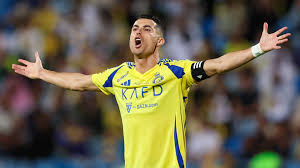
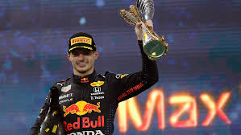
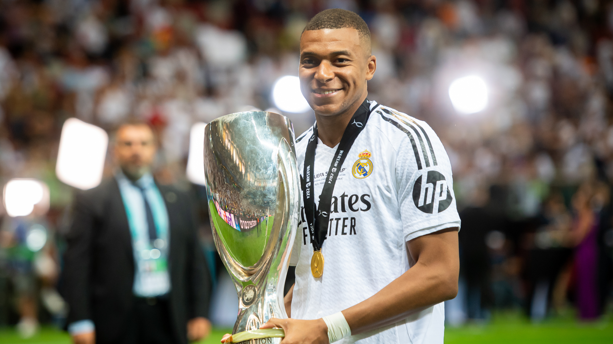
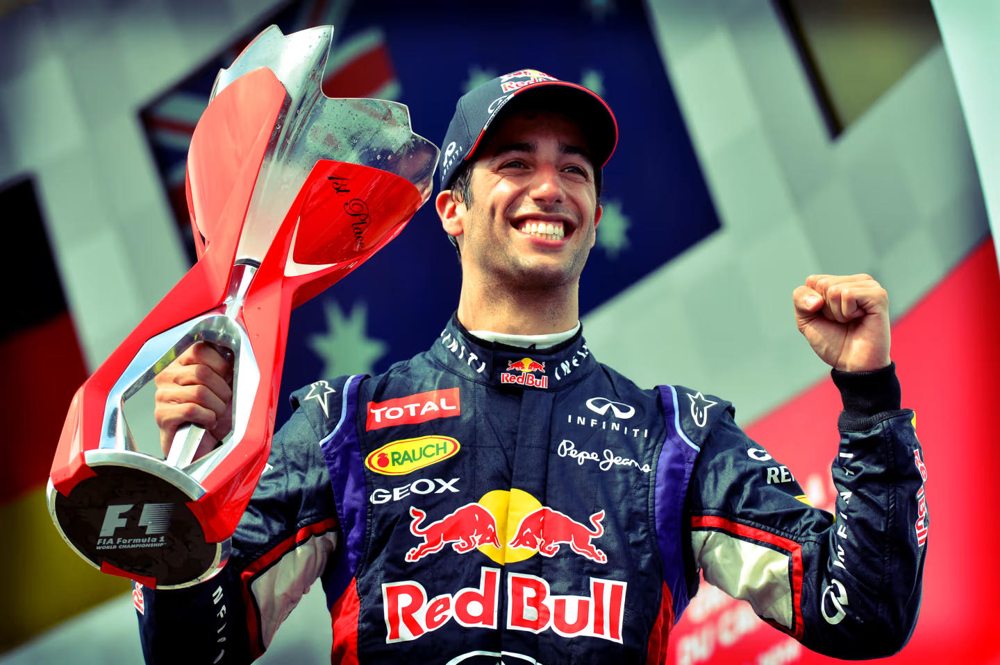
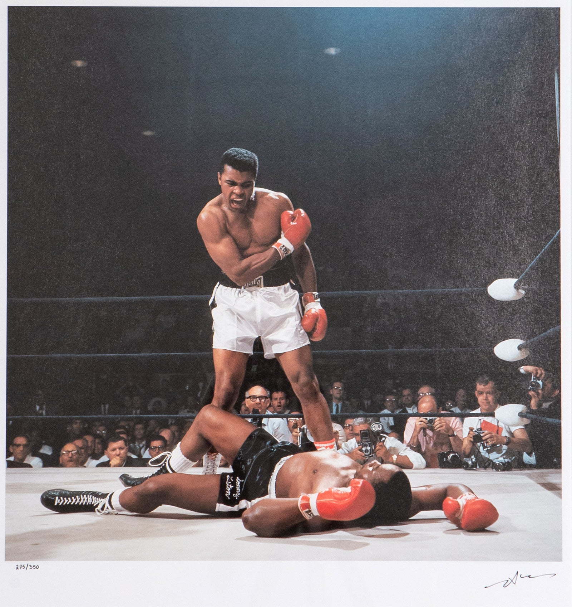
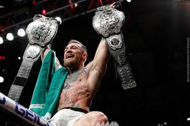

GOATED Sportsmen
Ayrton Senna
Legendary Formula 1 driver from Brazil, known for his extraordinary skill, speed, and three World Championships. Senna remains an icon in motorsport history for his dedication and passion.
"The harder I push, the more I find within myself." — Ayrton Senna

Cristiano Ronaldo
One of the greatest footballers of all time, Cristiano Ronaldo has won multiple Ballon d'Or awards, Champions League titles, and has set numerous records with his goal-scoring prowess.
"Your love makes me strong, your hate makes me unstoppable." — Cristiano Ronaldo
Max Verstappen
A young and aggressive Formula 1 driver from the Netherlands, Verstappen has already claimed multiple world championships, showcasing a driving style that makes him a fan favorite.
"I always want to win, but sometimes, the lesson is in the loss." — Max Verstappen
Kylian Mbappé
French footballer known for his incredible speed and skill, Mbappé rose to global fame at a young age and continues to be a key player for club and country.
"You should always focus on training and keep working hard. Never give up." — Kylian Mbappé
Daniel Ricciardo
A charismatic Australian Formula 1 driver, known for his late braking and exceptional overtaking abilities. Ricciardo is celebrated for both his driving skills and personality.
"Smile more often. It feels good." — Daniel Ricciardo
Michael Schumacher
German Formula 1 legend with seven World Championships, Schumacher is renowned for his dominance in the sport and holds many records that set the standard in F1 history.
"Once something is a passion, the motivation is there." — Michael Schumacher

Muhammad Ali
Muhammad Ali, known as "The Greatest," was a three-time world heavyweight boxing champion. Revered for his skill, speed, and charisma, Ali’s influence extended beyond the boxing ring as a global icon of resilience, courage, and determination.
"I hated every minute of training, but I said, 'Don't quit. Suffer now and live the rest of your life as a champion.'" — Muhammad Ali
Conor McGregor
A dynamic and outspoken MMA fighter, McGregor made history by holding two UFC titles in different weight classes, bringing global attention to mixed martial arts.
"Doubt is only removed by action. If you’re not working, then that’s where doubt comes in." — Conor McGregor